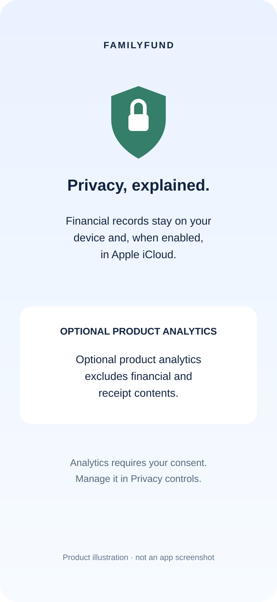

Your expenses, with clear control over your data.
Financial records stay on your device and, when enabled, in Apple iCloud. Optional product analytics excludes financial and receipt contents.
View FamilyFund on the App Store ↗Free download · Optional premium subscriptions

Know where each kind of data goes.
| Data or feature | How it is handled |
|---|---|
| Transactions and category budgets | Stored locally on your device. |
| Optional sync | Uses Apple’s iCloud and CloudKit infrastructure linked to your personal Apple account. |
| Optional product analytics | Affirmative consent enables coarse product milestones sent to FamilyFund’s analytics service. Receipt contents, amounts, merchants, and transaction notes are excluded. |
| Subscriptions | Apple processes purchases. FamilyFund receives entitlement and subscription-status information. |
| Exchange rates | Rate requests use open.er-api.com. The service handles ordinary network metadata; the full financial ledger is not intentionally sent. |
| Support | Email support processes the information and attachments you choose to send. |
Optional analytics is your choice.
Product analytics starts only after acceptance of the current consent notice. Declining does not restrict app features. Camera permission, analytics consent, and subscription purchases are separate choices.
Milestone events describe actions such as onboarding completion or receipt saving. They do not include receipt images, recognised text, financial values, or transaction notes. Raw usage events are retained for 30 days and aggregate counts for 12 calendar months.
Review receipt details before saving.
Receipt recognition can suggest expense fields. Check the amount, date, currency, and merchant before saving. Recognition success does not guarantee that every field is correct.
Receipt contents are excluded from optional product analytics. This statement concerns analytics; it should not be read as a complete description of every receipt-processing component.
Privacy questions, answered directly.
Does FamilyFund store my ledger on its own server?
FamilyFund’s financial records use local device storage and optional personal iCloud sync, rather than a FamilyFund-operated ledger backend.
Does iCloud sync mean that no data leaves my device?
No. Enabling sync uses Apple’s iCloud infrastructure. Exchange rates, optional analytics, subscriptions, and support also involve the services described above.
Does declining analytics disable receipt capture?
No. Analytics consent is separate from camera permission and receipt recognition. Declining analytics does not restrict app features.
Where can I read the full policy?
Read the FamilyFund privacy policy and the app’s current consent notice. Contact support for questions about a particular workflow.
Privacy that supports everyday budgeting.
See how monthly family budgeting in FamilyFund connects category limits, recorded spending, and your remaining budget.
Take a closer look at FamilyFund.
Review the current features and compatibility on the App Store.
Explore the app ↗